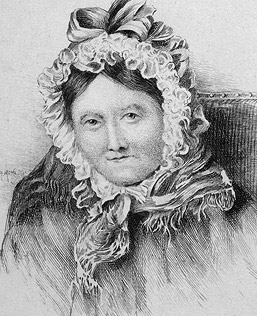
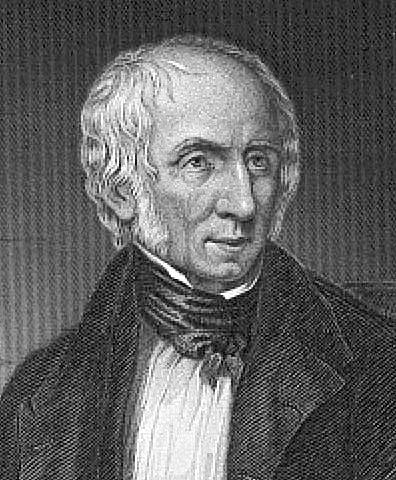

|  |  | |
|
Dorothy Wordsworth (1771-1855) Dorothy Wordsworth, sister of poet William Wordsworth, was the only daughter in the Wordsworth household. Since the death of their mother, Dorothy lived in various places, eventually joining William in 1795 to live in the Lake District. Beside taking care of the household, Dorothy also served as William's secretary, "tirelessly copying and recopying the manuscripts of his poems to ready them for publication." 1 While Dorothy "wrote almost no word for publication," 1 her journals were very influential in her brother's writings as well as Samuel Coleridge's. Many of William's poems, including "I Wandered Lonely As A Cloud", echo specific passages from Dorothy's Grasmere Journals. |
William Wordsworth (1770-1850) William Wordsworth was one of four Wordsworth brothers. He attended Cambridge University. Upon completion of his degree, he went to France, where he fell in love with the daughter of a French Royalist. Despite planning to marry, lack of money forced William to go back to England. In England, he lived in the Lake District with his sister, Dorothy, who was also his "confidante, inspirer, and secretary".2 William used Dorothy's journal entries as inspiration for poetry. However, her language often "imprison, and sometimes stifle"6 his own language, causing difficulties in his poetry writing process. The two siblings remained devoted to each other, even after William married Mary Hutchinson, one of Dorothy's good friends. |
Introduction William Wordsworth's poem "I Wandered Lonely As A Cloud" was first published in 1804, two years after Dorothy Wordsworth's corresponding journal was written (1802). The connection between the journal entry and the poem is clear in the similarities between the two texts. However, Dorothy and William's language also differ in many ways. As a result, many scholarly works are devoted to intertextual reading of these two siblings. Indeed, Elizabeth Fay claims that reading the two writers "intertextually articulates the textual dialogue itself".8 In this project, we have attempted to explore how the similarities and differences between Dorothy and William's writings shed light on their respective philosophies about writing and nature. |